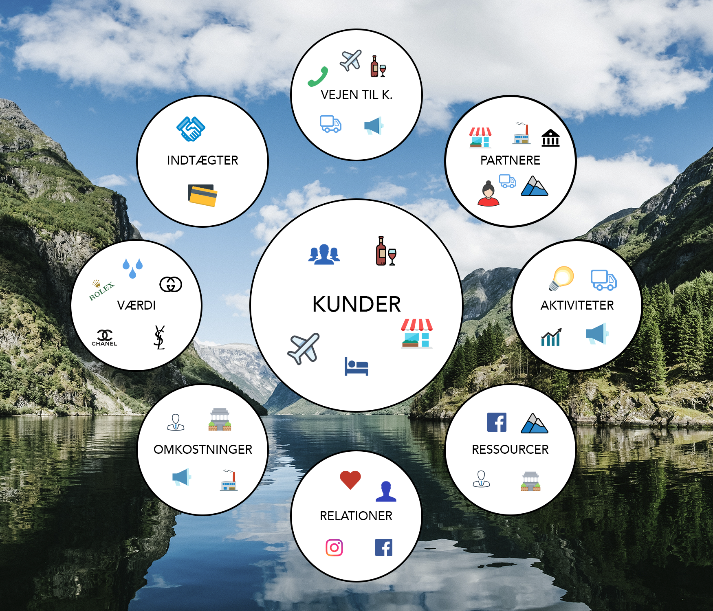

ÆGIRS
EKSKLUSIV NORDISK VAND
Projekt nummer 4 på Multimediedesigner-uddannelsen
Hvad gik opgaven ud på?
I dette gruppeprojekt skulle vi designe og udvikle et koncept for en vand, som vi selv skulle "opfinde". I dette projekt var der meget frie rammer og fokus var at få udviklet et koncept med tilhørende hjemmeside, indholdskalender, BMC (Business model canvas) og en konceptplakat. Dette var det første projekt på multimedie-uddannelsen med et mere kommercielt fokus.
I og med at der var så frie rammer, var det også et krav i opgaven, at vi var meget specifikke i vores konceptbeskrivelse. Der måtte ikke være nogen tvivl om, hvem der var målgruppen i projektet.
Vores løsning & tankerne bag
I min gruppe valgte vi at gå med en eksklusiv vand målrettet restauranter, hoteller, lufthavne, flyselskaber og muséer. Nøgleordene for Ægirs er luksus, eksklusivitet og image. Hovedformålet er ikke at dække det fysiske behov for vand men mere det image, folk får når de køber vandet. Tankerne bag var at lave en eksklusiv flaske lavet i glas og med et frostet look, der vil være fed at poste på de sociale medier. Vi fandt rigtig meget inspiration hos San Pellegrino, som vi mener har gjort noget af det, som vi gerne vil skabe.
Da man ikke bare kan skabe et eksklusivt brand fra dag 1, var tankerne i marketingplanen at komme ud blandt nogle af de brands, som vi gerne ville måle os med. Det ville vi gøre via sponsoraktiviteter til modeuger, på de sociale medier ved hjælp af influencers og ved at lave kampagner med kendte mennesker.
Tankerne bag websitet var at lave en relativ simpel og stilren hjemmeside, hvor både B2B kunder og B2C kunne finde den nødvendige information. For potentielle B2B kunder kunne det være oplysninger på salgsafdelingen, og for B2C kunder kunne det være en oversigt med vores forskellige forhandlinger. Tanken var også, at hjemmesiden skulle være nem at bruge på alle gængse platforme.
SE DEN FÆRDIGE HJEMMESIDEHer ses et af de billeder, som vi brugte i projektet:

Hvad var min rolle i projektet?
Før projektet gik i gang fik vi fordelt de forskellige opgaver mellem os. Min rolle i projektet var i høj grad det grafiske arbejde - blandt andet med mockups, wireframes og BMC og konceptplakaten. Samtidig lavede jeg også meget af det kommercielle, da jeg skrev vores marketingplan, lavede BMC'en og noget af konceptplakaten. Da det blev hverdag, og da vi rigtigt kom i gang med projektet, var jeg med rigtig mange steder. Jeg kodede også en undersside på hjemmesiden, da det var et krav. Jeg var også med inde over målgrupperne, samt de personaer vi lavede i projektet.
Det arbejde jeg lavede
Noget af det, som jeg er mest stolt af ved projektet, er den visualiserede BMC og konceptplakat. Begge ting er udarbejdet i Photoshop. Det var også i dette projekt, jeg gjorde mig mine første erfaringer med Adobe XD. Et program jeg senere hen er blevet rigtig glad for at bruge til wireframes og mockups.Nedenfor går jeg dybere ned i noget af det arbejde, jeg var med til at lave ved Ægirs.
Business Model Canvas & konceptplakat lavet i Photoshop
Formålet med de visualiserede udgaver var at lave noget materiale, som vi kunne bruge i vores fremlæggelse. Ingen gider at se på en BCM eller konceptplakat fyldt med tekst. Derfor besluttede vi i gruppen af lave disse 2 udgaver, som vi kunne bruge i præsentationen. Vores uddybning til de forskellige plakater, skrev vi i vores aflevering.
Business Model Canvas lavet i Photoshop
Konceptplakat lavet i Photoshop
Wireframes & Mockups i XD
I projektet lavede jeg wireframes og mockups i Adobe XD. De 2 ting gjorde, at vi kunne have en rød tråd i, hvordan vores hjemmeside skulle se ud. Vi skulle nemlig hver især kode en side, så for at de ikke stak i 5 forskellige retninger, kunne vi skabe en tydelighed i vores design gennem wireframes og mockups. Wireframes brugte vi i høj grad i idé-fasen. Når vi havde en klar idé om designet, lavede jeg mockups, som vi også brugte i forbindelse med brugertests af hjemmesiden. Efterfølgende justerede vi lidt til, og så startede udviklingsprocessen.
Mockup for desktop-version lavet i Adobe XD
Mockup for mobilversion lavet i Adobe XD
Wireframe for desktop-version lavet i Adobe XD
Wireframe for mobilversion lavet i Adobe XD
Kodning i HTML & CSS
Det var 2 andre gruppemedlemmer, der havde hovedansvaret for at få kodet vores endelige version af hjemmesiden. Dog forlød det i opgaven, at vi skulle kode en side hver. Jeg kodede en side med vores 3 varianter. Siden er meget simpelt lavet i CSS grid med 2 kolonner, der begge er 1fr.
Se siden herHvilke erfaringer tager jeg med videre?
I og med at jeg havde så mange hatte på, var Ægirs et projekt, hvor jeg lærte rigtig meget. Det jeg tager med mig er blandt andet, at der skal være en strammere struktur i gruppearbejdet. Vi arbejdede ikke så godt sammen i gruppen, og derfor endte det også med, at jeg lavede nogle ting, som jeg måske ikke burde have lavet. Jeg tror for eksempel at nogle tydeligere deadlines kunne have hjulpet på det.
Ud over det så udviklede jeg mig meget i Adobe XD under projektet, og det er senere blevet et program, jeg er rigtig glad for at bruge. Særligt når man er flere personer, der arbejde på et projekt, kan wireframes og mockups i Adobe XD være med til at sikre, at man får en rød tråd i designet på hele siden. Adobe XD er også super godt at lave brugertests i, fordi der er prototypeudgaven, der i princippet fungerer på samme måde som en almindelig hjemmeside.
Når man lærer at bruge XD, kan man også lettere det i en sammenhæng, hvor man for eksempel skal sælge og præsentere en løsning for en kunde. Wireframes og mockups bliver her en naturlig del af designprocessen, jo længere man kommer i den samlede proces.
SE DEN FÆRDIGE HJEMMESIDE